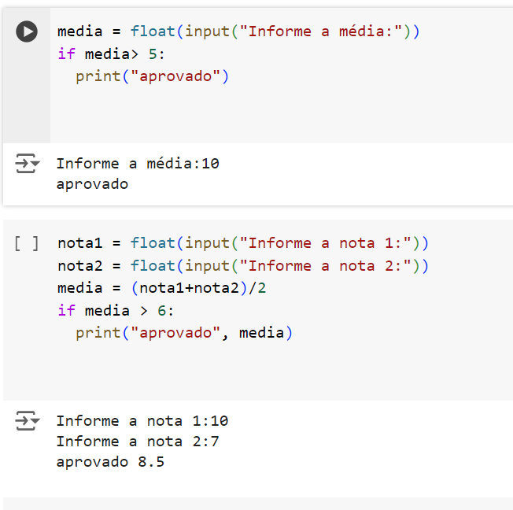
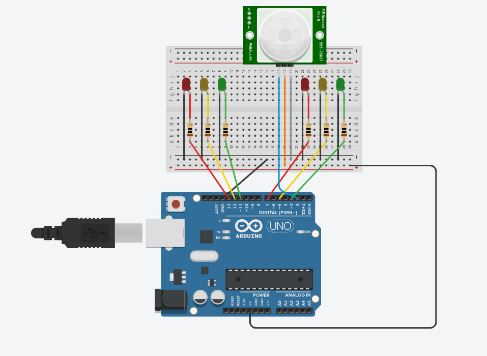

Sobre mim
Meu nome é Lívia Gomes de Carvalho.
Sou estudante do SESI, e optei pelo curso de desenvolvimento de sistemas, pois vi como uma oportunidade de adiquirir
novos conhecimentos, apesar de não querer seguir profissionalmente nesta área, decidi abraçar essa oportuniodade e
conhecer mais o curso, encarei como
um desafio!!!
O que eu esperava do curso
Eu esperava através do curso de Desenvolvimento de sistemas, aprender diversas coisas sobre sistemas operacionais, e me surpreendi pois aprendi muito mais!!!
Dificuldades
O que eu mais tive dificuldade durante esses seis meses, foi a matéria de Pyton, pois achei bastante complexa, foi difícil porém não deixa de ser muito interessante e importante.

Atividades realizadas
DOG DODÓI
Atividade da prototipagem de um site para uma clínica veterinária
foi o primeiro contato que tivemos com a estrutura de um site, quando o Igor passou
só conseguia imaginar como eu iria fazer todo aquele site funcionar (mal sabia eu), e confesso
que no ínico estava super animada para fazer o figma, mas depois ja não estava gostando tanto.
SEMÁFARO INTELIGENTE
A atividade do semáfaro inteligente, foi um desafio, tinhamos que contruir um circuito com sensores, eu particulamente achei bem dificíl, porém consegui realizar.

Site
Fazer a parte do front-end foi complicado no começo, porém tenho uma relação de amor e ódio, pois é muito legal ver o site se formando aos poucos, porém quando começa a dar errado é complicado.
O que fazer após a conclusão do curso
Durante esses seis meses de curso, aprendi e me surpreendi com várias coisas, nunca imaginei que conseguiria aprender a fazer um site em tão pouco tempo, apesar que não pretendo seguir na área após a conclusão, quero realizar o meu sonho de fazer odontologia, porém não significa que não gosto do curso, pelo contrário eu fiquei aliviada em perceber que era muito melhor do que eu imaginava, e mesmo que não seguirei na área adiquirir todo esses conhecimento não será um disperdício.